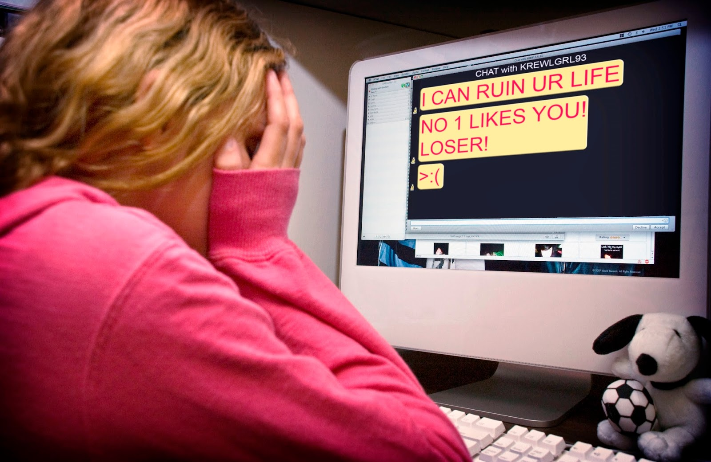

Cyberbullying is a serious issue that affects many individuals, especially young people. It can have long-lasting effects on mental health and well-being. This webpage aims to raise awareness about cyberbullying and provide resources for those affected.
What is Cyberbullying?
Cyberbullying is harming someone by intentionally posting pictures, text, or videos of someone using a device to share negative, false, and/or harmful content.
Cyberbullying can happen on many different platforms, such as text messages, email, online chat communities, or social media platforms. Platforms include Facebook, Instagram, Snapchat, and TikTok.
Why is Cyberbullying Especially Concerning?
- Digital devices allow constant communication, so it becomes difficult for children to get a break.
- Since content is shared electronically, it can be permanent if not removed, which could then affect college admissions, employment, and potentially your life.
- Recognizing cyberbullying can be hard for parents and teachers if they do not hear or suspect that it is happening.
Cyberbullying and the Law
States have laws requiring schools to respond to bullying.
Many states include cyberbullying in those laws.
Schools may be able or required to discipline or otherwise respond to cyberbullying.
In the state of Massachusetts specifically, there is a law that applies to bullying that happens off school grounds when it affects a child's rights at school, creates a hostile environment for the victim, or disrupts the educational process.
